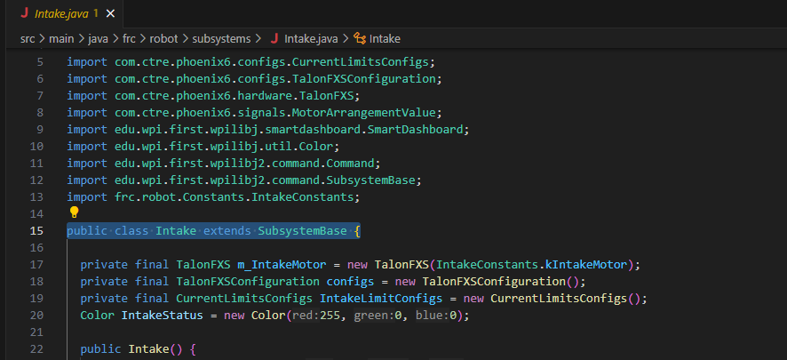

Making Subsystems
To create a subsystem, right-click on the subsystem folder, then click "New File" and give the file an appropriate name for the subsystem being made and add ".java" at the end. Once the file is made, add "package frc.robot.subsystems;", "import edu.wpi.first.wpilibj2.command.SubsystemBase;", and "public class 'name' extends SubsystemBase {}", all code must be inside the brackets.


